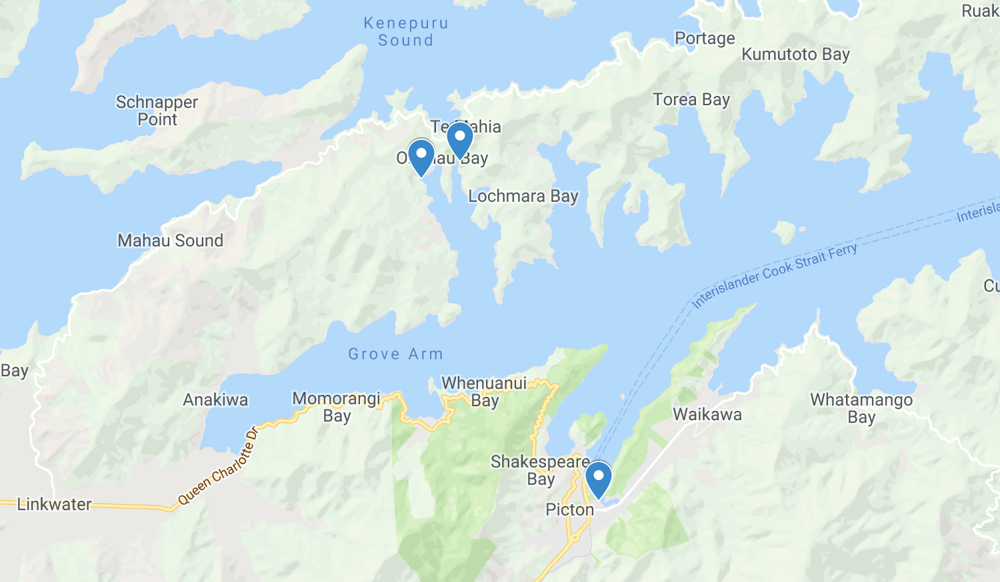

You're invited to join us at 1pm 28th September 2019 for our
wedding-boat-trip-sleepover-phosphorescence-party in the Marlborough Sounds!
For us, our wedding is about bringing together a close group of friends and family who have shaped who we are
today and will be an important part of our future.
We would love to invite you to share in this special day with us and celebrate our love for one another and
all the amazing people like yourselves who we're lucky to have in our lives.
Wear something that's smart and comfy as you'll be cutting some shapes on the dance floor later.
Frequently Asked Questions
Will there be phosphorescence?
Excellent question - we hope so!
Bring your togs - last year we were swimming the first weekend of October!
What shall I wear? - think smart, comfy, warm, and a little bit fun
We'd love it if you wear or bring a little sparkle for the reception (eg: sparkly hat, glasses, dress) but otherwise
just wear something comfy, warm and a bit fancy. It will get chilly later, so bring layers! You’ll have a chance to
get changed into something warmer before the reception too, if you need.
How will Saturday and Sunday run?
Saturday 28th September
1pm Meet at Beachcomber wharf in Picton for a boat ride to the ceremony (the boat will stay at the ceremony with your luggage onboard if you need to grab anything)
3pm Ceremony starts
3.30 - 5pm Drinks and nibbles
5pm Boat takes all guests across to Mistletoe Bay for the reception
You’ll have 20 minutes to drop your bags into your rooms (Te Mahia and Budyong Cottage guests can put bags in Kitchen) and put on warmer clothes if you need.
6pm onwards Dinner starts, then speeches, then dancing!!!
Sunday 29th September
Late morning We will put on a brunch midmorning, but suggest you bring some extra food in case of early risers. There are plenty of local walks, kayaks and paddle boards to keep the more adventurous ones busy.
3pm Boat leaves Mistletoe Bay back to Picton
3.45pm Arrive back at Picton, at the Beachcomber wharf
What about gifts?
We’re so grateful to have our friends and family in one place for our wedding day and truly do not want any gifts.
We’ve set up our home already and feel very lucky to have everything we need. For those of you insisting :) we’ve
made a few buckets of things we would like to invest in once we’re more settled and will follow up to let you know
exactly what we end up getting.
Here's the link to the buckets.
Where is the wedding and reception?
The wedding ceremony will be at Waterfall Bay and the reception at Mistletoe Bay.
PS: Here is a sneak peek of our wedding
venue. (Can't wait!)

How do I get to Picton?
International guests: Fly into
Wellington
and then take a connection to either Picton or Blenheim:
- Internal flight from Wellington to Blenheim (see flights.google.com)
- Soundsair (tiny flight to Blenheim or Picton around $70 and quite the kiwi experience. If you're lucky, you'll see the Marlborough Sounds at sunset by air. Not recommended for nervous flyers).
- The Interislander ferry to Picton - via Cook Strait. 3-4 hour trip and beautiful views. Can go by foot or take your car.
Eco sparkles?
Yes, exactly. We will be in a beautiful part of NZ so by sparkles, we mean sparkly glasses or a hat or something
you can put on for the reception, like a little glam on your dress or shirt. Please don't bring glitter or
anything we can't clean up in our beautiful NZ nature nook at Waterfall Bay.
September?!
Apologies about the late notice. We got inspired to have a wedding,
so decided to lock it in this September. We hope you can make it!